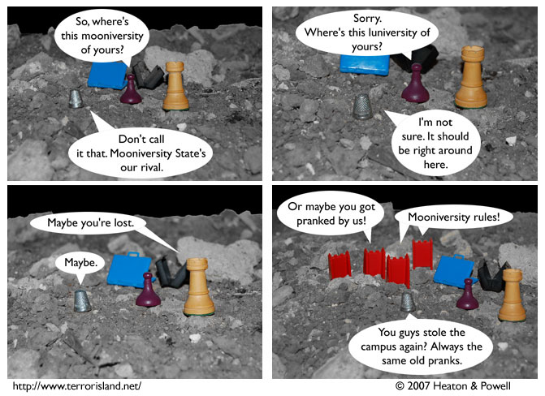

Strip #117
— Monday, March 11, 2007
Mooniversity State’s mascot is a moon rock, because Mooniversity kids are jerks.
Notes, Thoughts, &c.
Ben’s Notes
In regards to strip #116, a fan by the name of frost_maze asks, “Wouldn’t the suitcases have burst open as soon as York landed on the moon? After all, the suitcases have air inside and the pressure would make it open.”
That’s a good question. The answer is that in order to stow away, Sid and Stephen had to remove the contents of the suitcases so they could fit inside. So although they had pressurized air when York packed them, this was no longer the case upon moon arrival.
Lewis’s Notes
Spring Break! WOOOOOO!
So far, my spring break has consisted in catching up on sleep. Soon it will involve writing some papers as well. Believe it or not, this is actually a super appealing way to spend spring break.
For realsies.